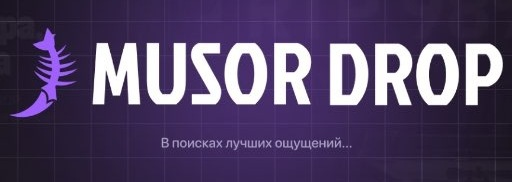
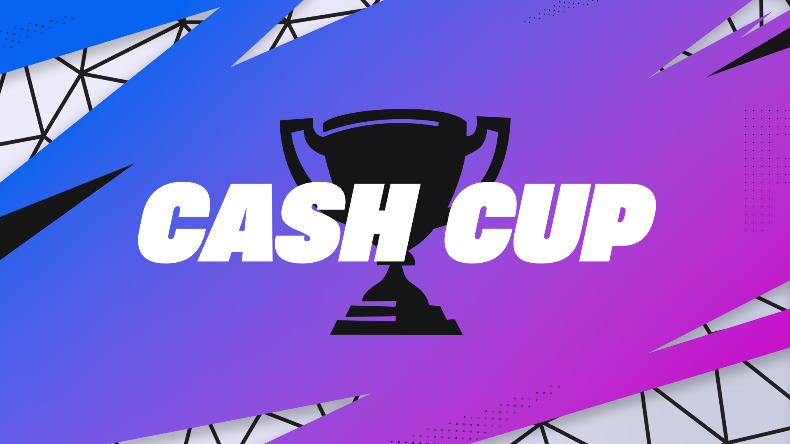
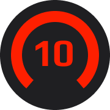

Наша киберспортивная команды была создана в 2020 году. Изначально команда была создана ассоциацией из 5 человек с одними интересами. Основоположником стал Никита "fluffshad", который создал беседу и пригласил в её будущих участников команды. Команда должна была принимать участие во многих дисциплинах, в том числе таких как Brawl Stars, Cs:go, Standoff 2. Однако главной игрой стал Fortnite, на то время быстро набиравший популярность среди молодёжи.
В первом составе команды были такие личности как Никита "fluffshad", Виталий "Crukq", Денис "lososko", Тимур "Valdemar", Георгий "wannakmsss", Даниил "MendesHD" и неизвестный игрок DELETED. Некоторые из этих игроков позднее покинули состав и занялись своими делами, и на данный момент только двое из первоначального состава до сих пор защищают честь Dragons. Интересная история затронула команду сразу после её создания. Основатель fluffshad в одном из первых сообщений другим игрокам сказал, чтобы те ни в коем случае не рассказывали о создании команды некому Артемию.
У нашей команды есть немало фанатов и болельщиков, которые поддерживают её на турнирах. За последнее время средний онлайн на трансляциях увеличился с 0 до 1 зрителя постоянно. Спасибо всем кто поддерживает нашу команду на аренах и в онлайне. Мы очень благодарны всем кто оказывает моральную и материальную поддержку нашим игрокам. Отдельное спасибо хочется отдать родителям наших игроков, которые держат этих иждивенцев на постоянной зарплате.
Если вы тоже хотите начать поддерживать нашу команду, переходите в наши соцсети в телеграм, ютуб и твич. Наши игроки с переменным успехом запускают трансляции и ведут свои блоги в этих соцсетях. Нам очень важно, чтобы их усилия не были напрасными, поэтому просим вас отнестись с пониманием к маленькому скиллу и айкью наших игроков.
За своё недолгое существование команда Dragons смогла добиться больших успехов в разных дисциплинах.
В 2025 году Георгий "wannakmsss" и Виталий "Crukq" заняли первое место в Duo Cash Cup в Fortnite, что увеличило заработок команды на 100$, которые однако не были выплачены по вине организаторов

В конце 2025 года Тимур "Valdemar" смог добиться 10 уровня на платформе FaceIT в дисциплине CS2, что стало лучшим результатов из всех игроков команды. В результате этого он был коронован как GOAT,
так как другие участники команды wannskmsss и crukq, которые так же принимали участие в забеге до 10 уровня, сдались раньше срока и не достигли цели.
Также стоит заметить, что условием забега было принудительное избавление от волос на голове в случае неудачи, которое также проигравшими участниками было не выполнено.
